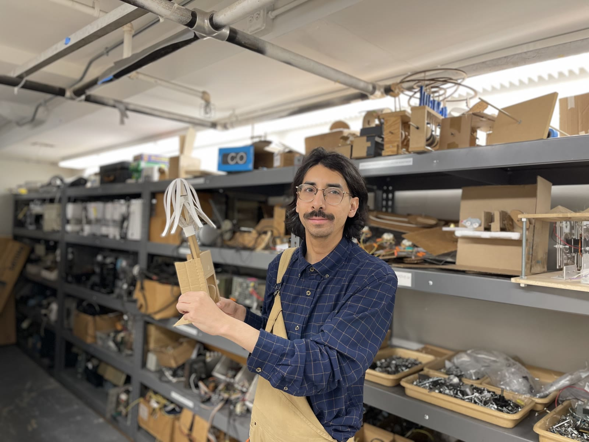

About

Bio
Juan Eduardo Flores was born in Del Rio, Texas, and raised on the southeast side of San Antonio, where he got his start in high school making community mosaic-tile murals with other students through The Contemporary at Blue Star’s MOSAIC program. He received his BA in Art from Connecticut College in 2016 as a fellow of the Ammerman Center for Arts & Technology. As the recipient of the Mortimer Hays-Brandeis Traveling Fellowship, he then spent over a year in Mexico City developing a sound art practice, and in 2023 he received his MFA in Art and Technology Studies from the School of the Art Institute of Chicago.
He has exhibited at Ars Electronica in Linz, Austria; Voltaje – Salón de Arte y Tecnología in Bogotá, Colombia; the Centro Cultural de España in Mexico City; and the Hong Museum in Wenzhou, China, as well as with SAIC at EXPO Chicago.
He currently teaches in the School of Art & Art History at the University of Illinois Chicago as an Adjunct Associate Professor.
Artist statement
Working with motion and sound, I explore the tension between control and entropy. My process begins with travel: the passage from point A to point B, what a message keeps along the way, and what it leaves behind. The artifact, the record, and the archive matter less to me than the systems that carry them. I stress-test those systems, looking for unlikely ways to store, process, and transform data and listening for the noise and decay. Through the interplay of labor, automation, and the everyday, I ask how little a message needs to be received, how the barely perceivable can be louder than the amplified, and how to pack something heavy in a light package. If information is measured by surprise, I'm looking for the point where surprise turns into wonder.